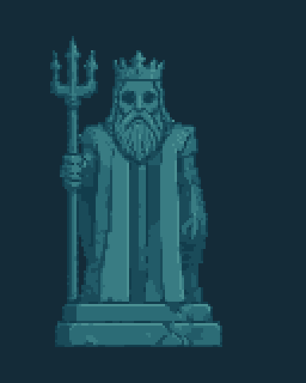
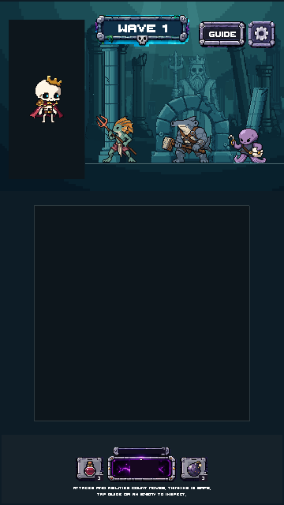
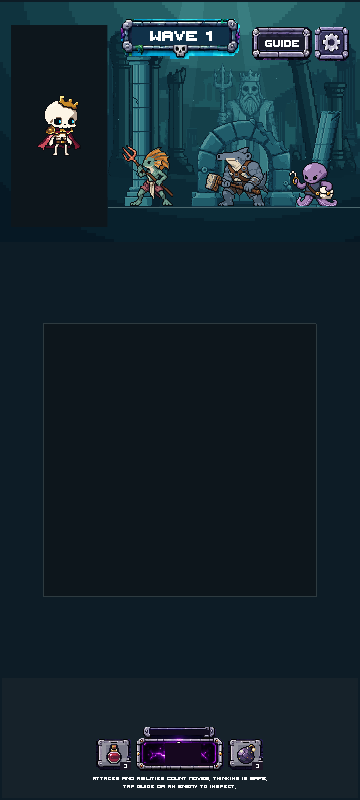

Drowned Court · Stage 02
CANDIDATE · Statue, modular columns and court arch · Awaiting review
Ten separate native assets from three PixelLab sources, cleaned and constructed in LibreSprite. 18 generations used this stage; 606.20 remain. All accepted Stage01 artwork and production files are unchanged.
Verification / artistic review · Accepted Stage01 · Stage00 findings
Actual Unity preview
Art-only scene with unchanged Rattlebones and three Court enemies as contrast overlays. The floor, portrait and board are still staging placeholders.
Before and after
Statue and native composition
Statue · 3× nearest-neighbor on plain background
Assembled layers · native 1×
Native assets · 1× source pixels
Native contact sheet · 2× inspection sheet
Modular joins
Capital, shaft, worn shaft and base share exact connector rows. The ledge joins horizontally. Broken and rubble variants remain separate reusable pieces.
Raw PixelLab sources
Raw sources are preserved. Native statue/arch/column silhouettes are unchanged by cleanup; construction variants are kept separately.
Visual target
The mockup guides theme and architecture. Its characters and UI are not replacements.
Full Unity staging views and captures


720×1280 · 720×1600 · 1080×1920 · 1080×2400 · Layers only
Static camera renders; no new gameplay, live health/countdown, safe-area interaction or device testing claimed.
Stage03 has not started. Nothing merged.